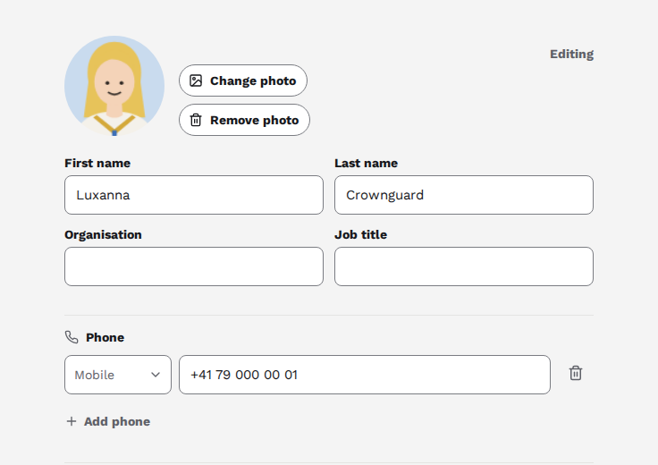
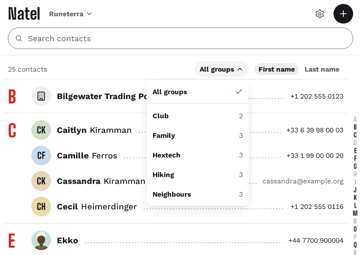

Why Natel
Your CardDAV server may have no web interface for your contacts. Natel is that interface.
-
The same contacts. Natel reads and writes the contacts on your CardDAV server. Your phone and computer keep syncing them, as today.
-
Nothing to migrate. Sign in with your CardDAV account. Natel stores no contacts itself.
-
Contacts only. No calendar, no tasks, no offline mode.
What it does
For a contact

- Photo
- Add one and crop it. Large photos are scaled down and keep their orientation.
- Details
- Names, phones, emails, addresses, websites, birthdays and notes.
- iPhone and Android
- Keeps what iPhone and DAVx⁵ write: custom labels, birthdays without a year.
- Groups
- Add it to a group or take it out, in the group cards Apple and DAVx⁵ use.
- Move to another book
- Move it there without exporting and importing it again.
For an address book

- All your books
- Switch between the address books on your account.
- New contacts
- Create one, or delete those you no longer need.
- Search
- Names, phone numbers, email addresses and organisations.
- Filter and sort
- Show one group, sorted by first or last name.
- Import and export
- Import a vCard (
.vcf) file with a preview that flags likely duplicates, or export the whole book.
On phone and desktop, in English or French, light or dark, with keyboard shortcuts. Installable as an app.
Your data
Your contacts
-
What Natel doesn't show stays intact. vCard fields Natel doesn't edit are written back as they were. Round-trip tests check this.
-
Your phone's changes are safe. If a contact changed elsewhere after Natel read it, you see a conflict, not an overwrite.
-
Tested on real servers. Baïkal, Radicale, Xandikos and Nextcloud, in CI. SOGo has a known bug with deletes: see compatibility.
Your password and privacy
-
Your password stays off disk. Natel checks it against your server and keeps it in memory for the session, up to 7 days. Your browser only holds a cookie that page scripts can't read.
-
No analytics. Your server only checks for new releases. You can turn this off.
Self-host
- 26 MB Compressed image
- ~16 MB RAM at idle
Natel 0.5.1, measured on linux/amd64, 11 November 2026.
Docker
In a compose.yaml, set CARDDAV_URL to your CardDAV server's origin:
services:
natel:
image: ghcr.io/kewindousse/natel:0.5
environment:
CARDDAV_URL: https://dav.example.com
ports:
- "127.0.0.1:8080:8080"docker compose up -dThen open http://localhost:8080 and sign in with your CardDAV account. For HTTPS, reverse proxies and other options, see the deployment guide.
Bare metal
You need
Node 24
with pnpm,
 Go 1.27
and
Caddy 2.11.7
or later.
Go 1.27
and
Caddy 2.11.7
or later.
- Check out a release tag, then run
pnpm buildfor the app andgo buildfornatel-session. - Copy
dist/into a folder of its own, never the repository, with the Caddyfile andnatel-session. - Run Caddy under
natel-sessionin its systemd service, withCARDDAV_URLset, then restart Caddy.
Every command and setting: running without Docker.
Beta software. Export your address books, or back up your server, before your first edit.